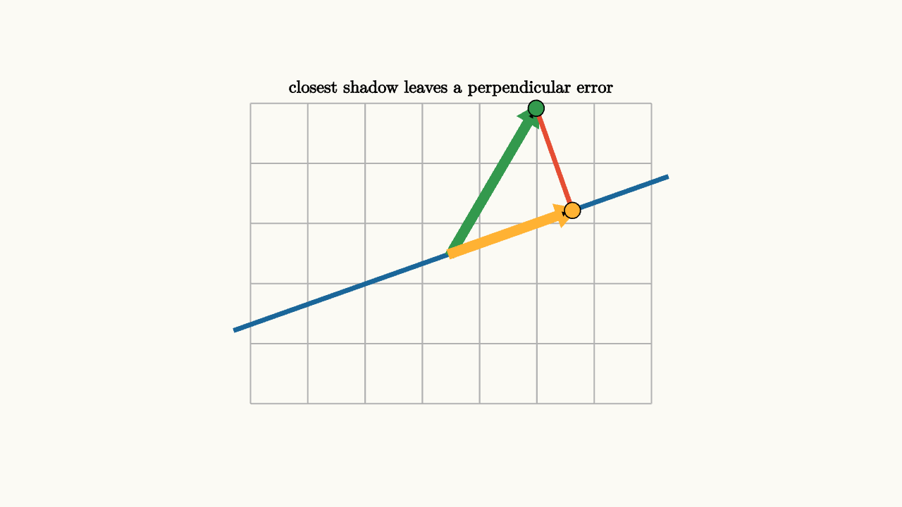

Projections Choose the Closest Shadow
A projection answers a practical question: if a vector cannot live in a chosen line or plane, which point in that line or plane is closest?
Imagine a lamp shining straight down onto a slanted rail. A point in space casts a shadow on the rail. The shadow is the projection. The leftover segment from the shadow to the point is the error, and the error meets the rail at a right angle.
For a line spanned by a nonzero vector $u$, the projection of $x$ onto the line is
The dot product reads how much of $x$ points along $u$. Dividing by $u\cdot u$ adjusts for the length of $u$.

source
background = [0.985, 0.98, 0.955, 1]
camera = Camera(4.5b)
let u = [1.55, 0.55, 0]
let x = [0.85, 1.45, 0]
let scale_u = dot(x, u) / dot(u, u)
let p = scale_u * u
mesh diagram = block {
. stroke{LIGHT_GRAY, 1.2} LineGrid([-2, 2, 8], [-1.5, 1.5, 6], 1)
. stroke{BLUE, 4} Line(start: -1.4 * u, end: 1.4 * u)
. stroke{GREEN, 5} Arrow(start: [0, 0, 0], end: x)
. stroke{ORANGE, 5} Arrow(start: [0, 0, 0], end: p)
. stroke{RED, 4} Line(start: p, end: x)
. fill{ORANGE} center{p} Circle(0.08)
. fill{GREEN} center{x} Circle(0.08)
. center{[0, 1.65, 0]} color{BLACK} Text("closest shadow leaves a perpendicular error", 0.62)
}Why must the error be perpendicular? Suppose $p$ is the closest point on the line, and $x-p$ is the error. If the error still had some component along the line, you could move $p$ a little in that direction and get closer to $x$. The closest point has used up every possible along-the-line improvement. The remaining error is orthogonal to the line.
This gives a clean equation:
where $p$ is in the line and
For a unit vector $q$, the formula becomes especially simple:
The dot product gives the signed length of the shadow.
A quick derivation is worth keeping. Points on the line through $u$ look like $cu$. The closest point should make
as small as possible. Expand:
That equals
This is a quadratic in $c$. Its minimum occurs at
So the closest point is
The formula and the right-angle picture are two views of the same minimization.
source
background = [0.985, 0.98, 0.955, 1]
camera = Camera(4.6b)
let u = [1.55, 0.55, 0]
let x = [0.85, 1.45, 0]
let p = (dot(x, u) / dot(u, u)) * u
let Scene = |drop| block {
let current = lerp(x, p, drop)
. stroke{LIGHT_GRAY, 1.1} LineGrid([-2, 2, 8], [-1.5, 1.5, 6], 1)
. stroke{BLUE, 4} Line(start: -1.4 * u, end: 1.4 * u)
. stroke{GREEN, 4.5} Arrow(start: [0, 0, 0], end: x)
. fill{GREEN} center{x} Circle(0.08)
. stroke{ORANGE, 4.5} Arrow(start: [0, 0, 0], end: current)
. fill{ORANGE} center{current} Circle(0.08)
if (drop > 0.9) {
. stroke{RED, 4} Line(start: p, end: x)
. center{[0, 1.68, 0]} color{BLACK} Text("the remaining error is orthogonal", 0.62)
} else {
. center{[0, 1.68, 0]} color{BLACK} Text("drop the vector onto the line", 0.62)
}
}
"vector and line"
mesh scene = Scene(drop: 0.0)
play Write(0.8)
"choose the shadow"
scene = Scene(drop: 1.0)
play Lerp(1.2)
"orthogonal leftover"
scene = block {
. Scene(drop: 1.0)
. center{[0, -1.72, 0]} color{BLACK} Text("x = projection + residual", 0.62)
}
play Fade(0.7)Projection is the beginning of approximation. If a complicated vector cannot be represented by a small set of directions, we choose the closest representation in those directions. The residual tells what the model failed to capture.
For a subspace with an orthonormal basis $q_1,\ldots,q_k$, the projection is
Each coordinate is read independently because the $q_i$ are orthonormal. With a tilted basis, projections still exist and the coordinates must be solved together because the directions interfere with each other.
The closest-shadow idea appears everywhere. In statistics, a fitted line is a projection of data onto a model space. In computer graphics, a 3D point projects to a screen. In signal processing, a noisy signal projects onto a smaller set of clean waveforms. In machine learning, embeddings often begin by projecting high-dimensional data into a more useful subspace.
The geometric test is always the same. The chosen approximation lives in the target space. The error is perpendicular to every direction in that space. Once you can see the right angle, the formula is no longer a trick. It is the condition for being as close as possible.
Projection also explains why some information disappears. If a point in the plane is projected onto the $x$-axis, its vertical coordinate is discarded. Many points share the same shadow. That makes projection useful for approximation and visualization, and it also makes projection impossible to invert in general.
A projection matrix $P$ has a special algebraic signature:
Project once, and the vector lands in the target subspace. Project again, and nothing changes. This equation says the shadow of a shadow is the same shadow.
For the projection onto the line spanned by a unit vector $q$, the matrix form is
Then
The matrix version is useful because it lets a whole computation treat projection as one linear transformation. The geometric version is useful because it reminds you what that transformation is doing: choosing the closest allowed vector and leaving a perpendicular residual behind.